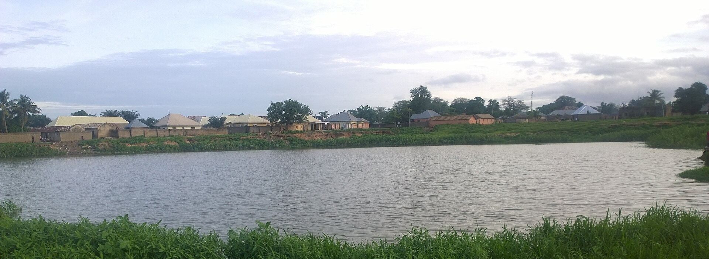

Fisheries & Aquaculture
Catfish, tilapia and fingerlings from our ponds — harvested, processed and delivered fresh or smoked.
Overview
Modern Aquaculture Operations
Our fisheries division runs concrete and earthen ponds stocked with catfish and tilapia. Water quality is managed continuously from our boreholes and reservoirs, and fish are fed on quality floating feed. We supply table-size fish, fingerlings and juveniles to farmers and markets.
- Hatchery producing quality fingerlings and juveniles
- Grow-out ponds with monitored water quality
- Fresh, frozen and smoked fish processing

Our Fish
Fisheries Products
Table-Size Catfish
Fresh and frozen catfish for markets.
Tilapia
Pond-raised tilapia for retail and restaurants.
Fingerlings
Quality fingerlings and juveniles for fish farmers.
Smoked Fish
Kiln-smoked, packaged fish with long shelf life.
Fish for Your Business
Consistent supply for restaurants, hotels, retailers and fish farmers.